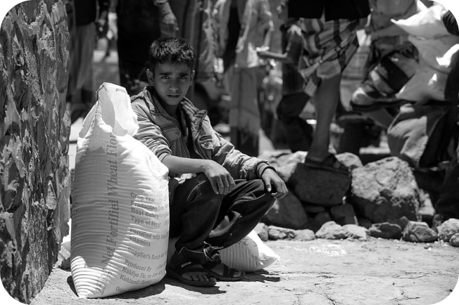

A fome é um dos problemas mais urgentes e devastadores enfrentados pela humanidade hoje.
A situação da fome global
A fome é uma realidade em muitos países, afetando principalmente regiões em desenvolvimento. Segundo a Organização das Nações Unidas para a Alimentação e a Agricultura (FAO), cerca de 811 milhões de pessoas no mundo estavam subnutridas em 2020. Isso representa mais de 10% da população global. Esses números alarmantes destacam a necessidade de ações efetivas para erradicar a fome.
Consequências da fome
A fome tem impactos devastadores tanto para as pessoas quanto para as sociedades como um todo. Além das consequências óbvias para a saúde e o bem-estar das pessoas, a fome contribui para a perpetuação do ciclo de pobreza e desigualdade. Crianças desnutridas têm maior probabilidade de sofrer com problemas de desenvolvimento físico e cognitivo, o que afeta seu desempenho educacional e oportunidades futuras. A fome também enfraquece as economias locais e pode gerar instabilidade social e política.
Se inscreva para receber novidades sobre o projeto